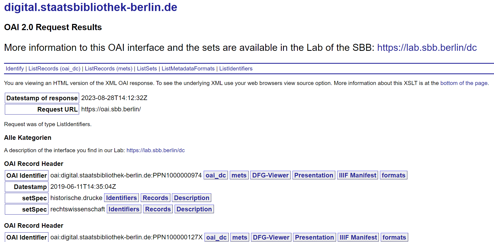
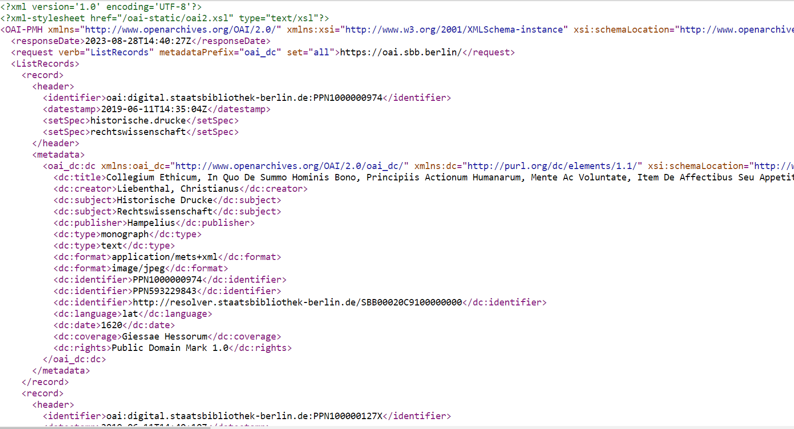
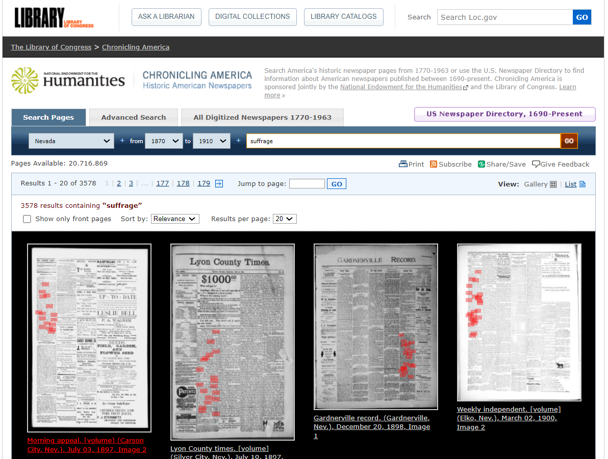
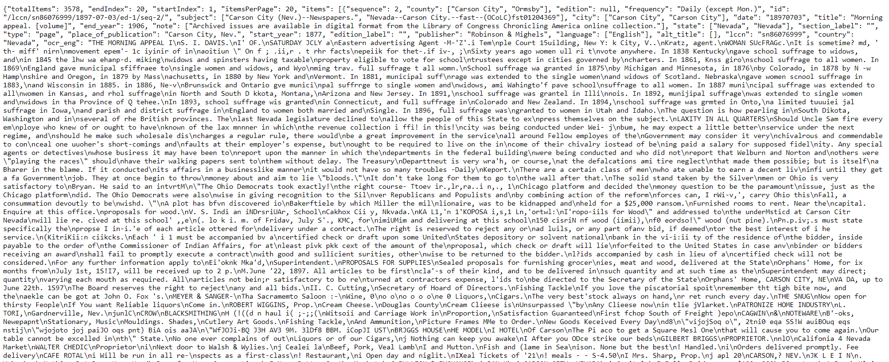
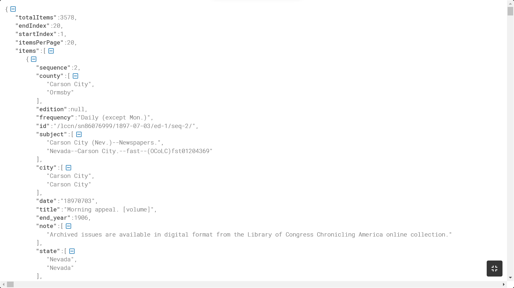
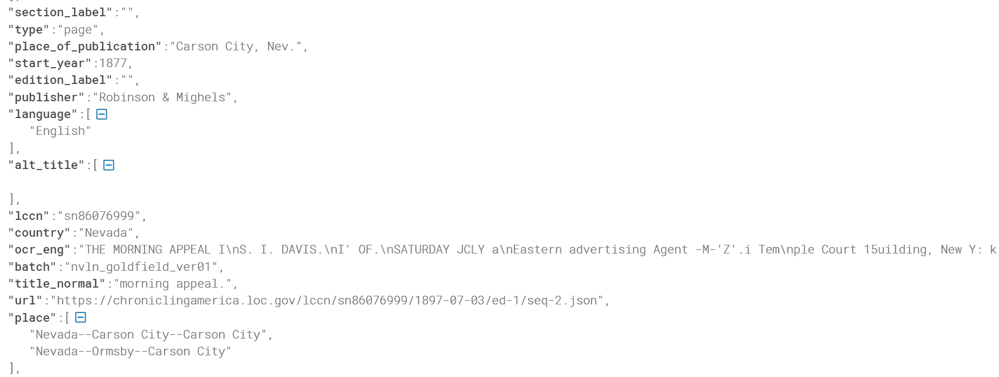
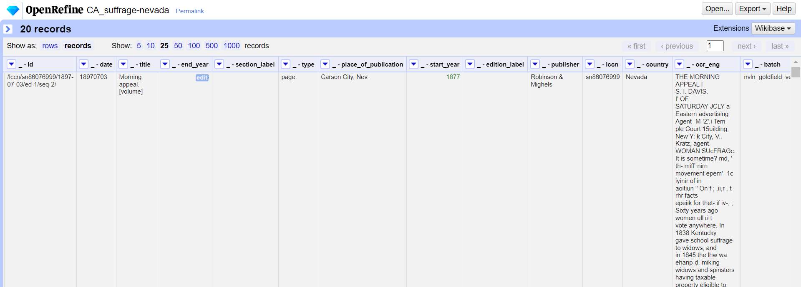

<!doctype html>
<html lang="de">
  <head>
    <meta charset="utf-8">

		<title>Stabi Tool Tuesday</title>

		<meta name="description" content="A colaborative learning space for all things DH">
		<meta name="author" content="Roman Kuhn">

		<meta name="apple-mobile-web-app-capable" content="yes">
		<meta name="apple-mobile-web-app-status-bar-style" content="black-translucent">

		<meta name="viewport" content="width=device-width, initial-scale=1.0, maximum-scale=1.0, user-scalable=no, minimal-ui">

    <link rel="stylesheet" href="dist/reveal.css">
    <link rel="stylesheet" href="dist/theme/white.css">
  </head>
  <body>
    <div class="reveal">
      <div class="slides">
         <section data-markdown data-separator="^\n---\n" data-separator-vertical="^\n--\n" data-separator-vertical="^\n--\n" data-charset="utf-8">
          <script type="text/template">
          <!--content goes here-->

          ## Stabi Tool Tuesday
          ### 1 - Datenquellen <!-- .element: class="fragment" -->
          24.10.2023

          ---
          ### Tool Tuesday
          Ein kollaborativer Raum, um DH-Methoden und tools zu diskutieren... auszuprobieren... zu experimentieren...

          ...manchmal auch zu scheitern? <!-- .element: class="fragment" -->

          --
          ### no code
          (für den Moment jedenfalls)

          --
          Folien und weitere Materialien finden sich hier: https://github.com/r0man-ist/tooltuesday

          Die heutigen Folien hier: https://r0man-ist.github.io/tooltuesday/slides/datenquellen.html

          ---
          ## Intro

          --
          ### über mich

          
          - Literaturwissenschaftler (analog ausgebildet)
          - im Moment zwischen Oxford und Berlin
          - **kein** Programmierer
          
          ... aber interessiert an digitalen Methoden <!-- .element: class="fragment" -->

          Aktuelles Projekt zur französischen Dichtung des 18. Jahrhunderts: u.a. mit sequence alignment <!-- .element: class="fragment" -->

          roman.kuhn@sbb.spk-berlin.de <!-- .element: class="fragment" -->
        
          
          --
## über dich 
Du bist
* ... Literaturwissenschaftler*in
* ... Historiker*in 
* ... Soziolog*in 
* ... Linguist*in 
* ... Digitale\*r Geisteswissenschaftler*in 
* ... Bibliothekar*in
* ... Programmierer*in 
* ... ?

--

[Umfrage](https://terminplaner4.dfn.de/3pX6x2OdGI7ifmvS) <!-- .element: class="fragment" -->

[Umfrage](https://terminplaner.dfn.de/3pzdsyvWAlfgAjT8) <!-- .element: class="fragment" -->

---
### Überblick über die Reihe
jeden zweiten Dienstag

im Moment sechs Termine fest geplant:
* **Datenquellen und Schnittstellen** <!-- .element: class="fragment" -->
* Datenstrukturierung mit OpenRefine <!-- .element: class="fragment" -->
* OCR/HTR <!-- .element: class="fragment" -->
* Named Entity Recognition (NER) <!-- .element: class="fragment" -->
* Netzwerkvisualierung (Gephi) <!-- .element: class="fragment" -->
* Topic Modeling <!-- .element: class="fragment" -->


--
Orientiert an einer (prototypischen) DH-'pipeline'

Forschungsidee/Forschungsfrage<!-- .element: class="fragment" -->

&#8618; Daten suchen (und finden); Daten generieren<!-- .element: class="fragment" -->

&#8618; Daten aufbereiten<!-- .element: class="fragment" -->

&#8618; Daten auswerten, transformieren<!-- .element: class="fragment" -->

&#8618; Ergebnisse (und neue Daten) publizieren/visualisieren<!-- .element: class="fragment" -->

--
Weitere Termine/Themen bei Bedarf

Bring your own data


---
### Datenquellen

Woher bekommen wir unsere Materialien/Daten???<!-- .element: class="fragment" -->

--
1. Repositorien und Datensets

https://www.deutschestextarchiv.de/

https://dracor.org/

https://textgridrep.org/

&#8618; z.B. https://textgridrep.org/project/TGPR-99d098e9-b60f-98fd-cda3-6448e07e619d

https://www.eighteenthcenturypoetry.org/
&#8618; https://github.com/alhuber1502/ECPA

https://lab.sbb.berlin/datenset-transkriptionen-julie-elias/

--
2. Webscraping

Ian Milligan, "Automated Downloading with Wget," Programming Historian 1 (2012), https://doi.org/10.46430/phen0001.

Jeri Wieringa, "Intro to Beautiful Soup," Programming Historian 1 (2012), https://doi.org/10.46430/phen0008.

--
3. Aus analogen Quellen / Bilddigitalisaten

&#8618; OCR/HTR <!-- .element: class="fragment" -->

--
4. Schnittstellen

Schnittstellen der Stabi

Für bibliographische Daten aus dem Stabikat:
https://lab.sbb.berlin/bibliographische-daten-aus-dem-stabikat/

Für Daten aus den Digitalisierten Sammlungen
https://lab.sbb.berlin/dc/

---
### Digitalisierte Sammlungen
Was gibt es überhaupt in den digitalisierten Sammlungen?

https://digital.staatsbibliothek-berlin.de/


>  Wie viele Medien mit Volltext gibt es insgesamt? <!-- .element: class="fragment" -->

--
https://oai.sbb.berlin/?verb=ListIdentifiers&metadataPrefix=oai_dc&set=ocr.fulltext

--


--


--
* https://oai.sbb.berlin
  * ?verb:
     * GetRecord
    * Identify
    * ListIdentifiers
    * ListMetadataformats
    * ListRecords
    * ListSets

    https://www.openarchives.org/OAI/openarchivesprotocol.html
--

Metadaten vs. Daten

---
### Bilder und Volltexte


https://content.staatsbibliothek-berlin.de/dc/PPN86053572X-00000255/132,280,788,187/full/180/default.png <!-- .element: class="fragment" -->

--
{scheme}://{server}{/prefix}/{identifier}/{region}/{size}/{rotation}/{quality}.{format}
  * PPN **PPN86053572X**
  * Seite **00000255**
  * x-Position **132**
  * y-Position **280**
  * Breite **788**
  * Höhe **187**
  * Auflösung **full**
  * Drehung **180**
  * Format **png**  *alternativ: .tif .jpg*


--


[Werkzeuge ausschneiden!](https://digital.staatsbibliothek-berlin.de/werkansicht?PPN=PPN1770469869&PHYSID=PHYS_0072&DMDID=DMDLOG_0027&view=overview-toc)

https://iiif.io/api/image/3.0/#41-region
https://iiif.io/api/image/3.0/#42-size


--
Wie aber bekommen wir die Koordinaten?
* z.B. aus einer OCR Layouterkennung
* Wenn bereits Volltext vorliegt: Aus den Volltextdateien

--
https://digital.staatsbibliothek-berlin.de/werkansicht?PPN=PPN86053572X&PHYSID=PHYS_0255

<pre><code data-trim data-noescape>
  <xmp><Illustration ID="Page1_Block2" HEIGHT="177" WIDTH="788" VPOS="290" HPOS="132"/></xmp>
    </code></pre>

--

https://content.staatsbibliothek-berlin.de/dc/PPN86053572X-00000255/full/full/0/default.png?highlight=132,290,788,177&highlightColor=ff0000


--

## Volltexte

https://content.staatsbibliothek-berlin.de/dc/86053572X-0255.ocr.xml

https://content.staatsbibliothek-berlin.de/dc/86053572X.ocr.zip

https://content.staatsbibliothek-berlin.de/dc/PPN86053572X.ocr.txt


---
## Über den Stabi-Tellerrand

Andere Bibliotheken/Bibliothekssysteme, andere Identifier (und Schnittstellen) 

---

### BNF/Gallica

[Gallica](https://gallica.bnf.fr/)

https://api.bnf.fr/
https://api.bnf.fr/fr/api-document-de-gallica

--

Statt PPN: ARK (https://arks.org/)

Alle Ausgaben des *Nouveau Mercure galant* in Gallica:

https://gallica.bnf.fr/ark:/12148/cb40216990r/date.r= <!-- .element: class="fragment" -->

--

https://gallica.bnf.fr/services/Issues?ark=cb40216990r

https://gallica.bnf.fr/services/Issues?ark=cb40216990r/date&date=1714 <!-- .element: class="fragment" -->

https://gallica.bnf.fr/ark:/12148/bpt6k63194664.texteBrut <!-- .element: class="fragment" -->

---

### LOC 

https://chroniclingamerica.loc.gov/

siehe Abgail Walker: [Getting Data for Digital Humanities with APIs: A Gentle Introduction](https://studentwork.prattsi.org/dh/2019/05/13/getting-data-for-digital-humanities-with-apis/)

--

[Suche nach "suffrage" in Zeitungen aus dem Bundestaat Nevada (1870–1910)](https://chroniclingamerica.loc.gov/search/pages/results/?state=Nevada&date1=1870&date2=1910&proxtext=suffrage&x=16&y=5&dateFilterType=yearRange&rows=20&searchType=basic)



--


[Suche mit Endung "&format=json"](https://chroniclingamerica.loc.gov/search/pages/results/?state=Nevada&date1=1870&date2=1910&proxtext=suffrage&x=16&y=5&dateFilterType=yearRange&rows=20&searchType=basic&format=json)



lccn: [library of congress control number](https://de.wikipedia.org/wiki/Library_of_Congress_Control_Number)

--



--



--

### JSON in OpenRefine



---

## Danke für die Aufmerksamkeit

27.11.2023: [OpenRefine](https://openrefine.org/)


</section>


        </script>
        
      </div></div></body>
   
    <script src="dist/reveal.js"></script>
    <script src="plugin/markdown/markdown.js"></script>
    
    <script>
      Reveal.initialize({
    plugins: [ RevealMarkdown ]
  });
    </script>

<link rel="stylesheet" href="plugin/highlight/monokai.css">
<script src="plugin/highlight/highlight.js"></script>
<script>
  Reveal.initialize({
    plugins: [ RevealHighlight ]
  });

  .uri {
  word-break: break-all;
}
</script>
  </body>
</html>